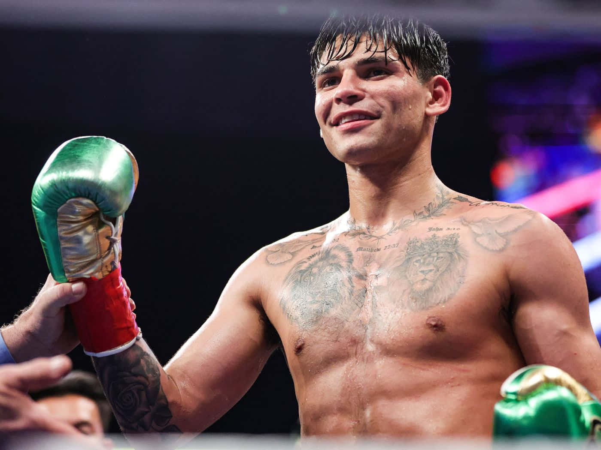

Ryan Garcia adalah petinju yang memegang rekor amatir 215-15 di tinju. Dia melakukan debut profesionalnya pada 9 Juni 2016, di Tijuana, California, di mana dia bertarung melawan Edgar Meza dan menang TKO. Di balik kariernya yang cemerlang, Ryan Garcia memiliki masalah kesehatan mental yang membuatnya sempat ingin pensiun dini dari tinju..
KingRy sang raja yang kontroversial adalah juara sementara kelas ringan WBC dengan karier yang mengejutkan. Kontroversi Ryan Garcia mulai dari problem kesehatan mental, pengin pensiun dini, jadi petarung UFC.
Gervona Davis
Karier petinju Gervonta Davis saat ini berada di puncaknya. Pasalnya, ia menyandang status sebagai petinju yang belum terkalahkan dari 29 laga profesional yang telah dilakoninya. Bahkan, pada 2023 ini, Davis sukses mengalahkan petinju Ryan Garcia yang memiliki rekor tak terkalahkan sebelumnya.Dikenal sebagai petinju yang memiliki gerakan agresif dan pukulan yang sangat kuat, Gervonta Davis punya kehidupan yang keras. Sebelum menjadi hebat seperti belakangan, masa kecilnya bisa dibilang kelam. Seperti apa perjalanan hidupnya sampai berkarier di ring tinju yang masyhur..

Gervonta Davis (/ dʒərˈvɒnteɪ / jər-VON-tay; lahir 7 November 1994), juga dikenal dengan julukannya " Tank ", adalah seorang petinju profesional Amerika. Dia telah memegang gelar kelas ringan Asosiasi Tinju Dunia (WBA) sejak 2023, setelah sebelumnya memegang versi Reguler dari 2019 hingga 2023..
MIKE TYSON

Michael Gerard Tyson lebih dikenal dengan nama Mike Tyson (lahir 30 Juni 1966, New York City, Amerika Serikat) adalah petinju profesional dan mantan juara kelas berat. Kariernya yang sangat menjanjikan terhambat oleh berbagai kasus kriminal. Julukan Mike Tyson secara internasional adalah "Iron Mike", merujuk pada postur tubuhnya yang kuat bagaikan besi. Beberapa media massa yang lain lebih suka menyebutnya sebagai "The Baddest Man on Earth", yang merujuk pada perangainya yang buruk, baik di dalam maupun di luar ring tinju. Sedangkan pers Indonesia lebih senang menyebut Tyson sebagai "Si Leher Beton" yang merujuk pada lingkaran leher Tyson pada masa jayanya yang ekstra besar dari ukuran normal, dan tampak begitu kokoh...
Populer post


Follow me
instagram @ me_gyii.